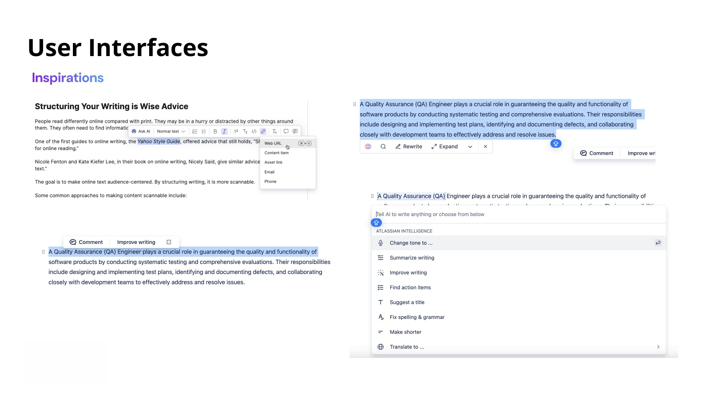
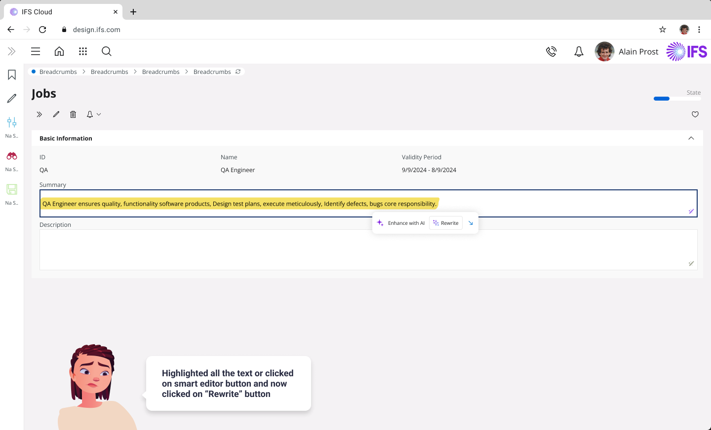
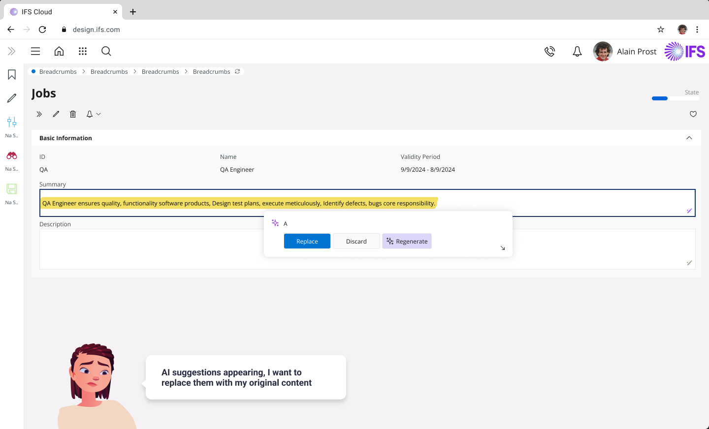
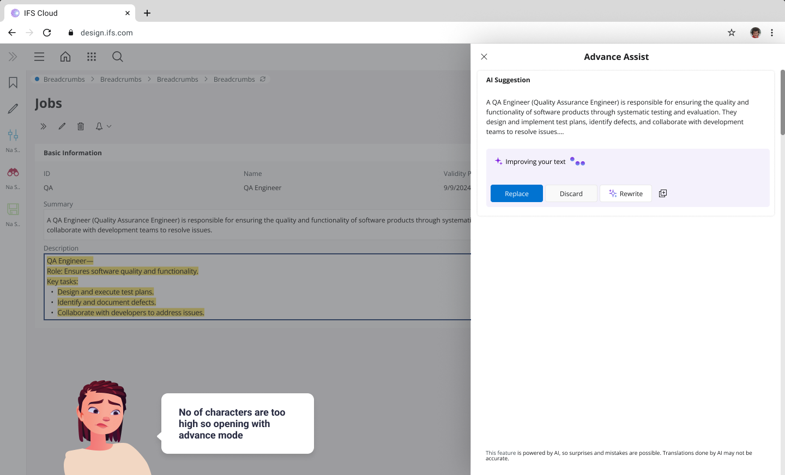
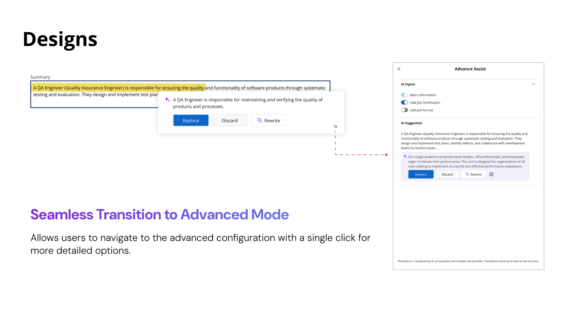
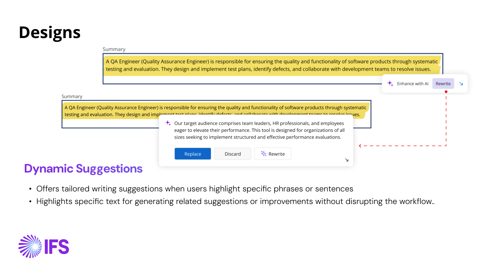
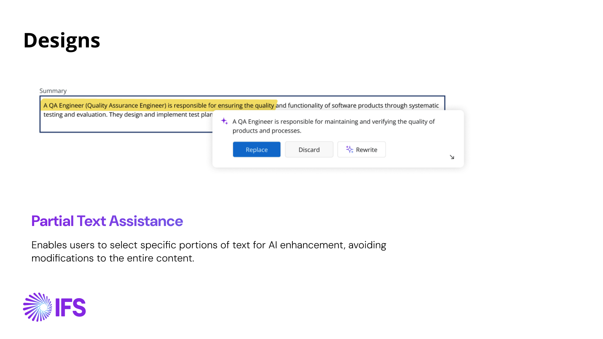
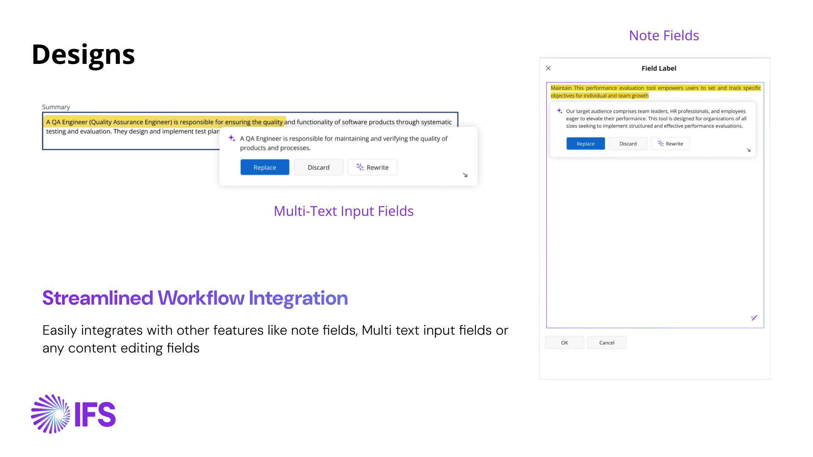
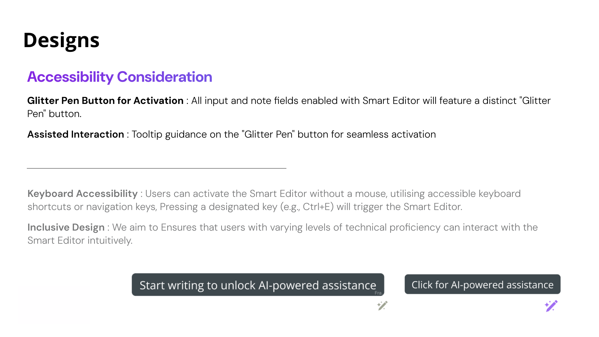
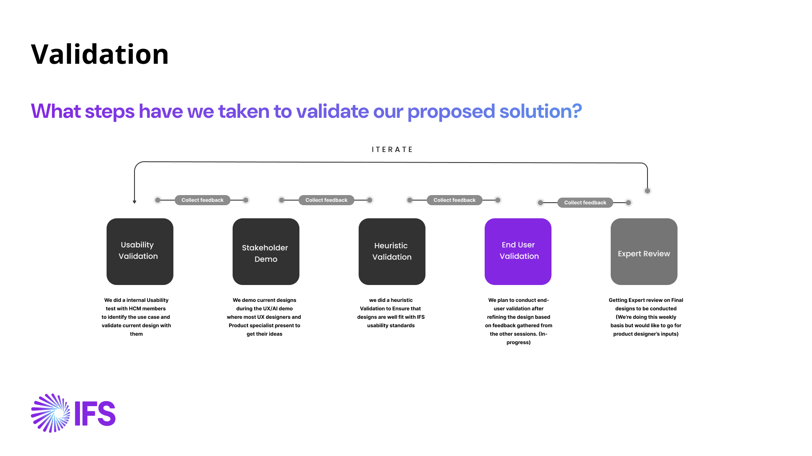

IFS Cloud · Case study
Smart Editor: AI writing help, built once and used everywhere
Every IFS Cloud product group writes text, and each could have built its own AI help. I designed one assistant in the central framework that any group can use in its own screens. The core release shipped in 25R1.

01 · ProblemEvery team writes text. None should have to build its own AI.
IFS is a large ERP platform with many product areas: projects, finance, supply chain, HCM and more. Every one of them has people writing text: job descriptions, forecast reports, notes, summaries.
The question was how those groups would get AI writing help. If each built its own, they would solve the same interaction problem separately. Smart Editor was introduced instead as a shared tool in the central framework, so groups can use it in their own apps. HCM, for example, can configure it to write a job description.
It was one of the biggest projects I've led, and I worked on it as its designer.
One tool, many jobs
Because it lives in the framework, the same pattern has to work for very different content and users. Smart Editor is used to:
- Generate daily forecast reports for supply chain
- Draft job descriptions
- Correct grammar
- Summarise long reports
- Generate content from given metadata
The design challenge: an interaction flexible enough for every product group, and light enough that it never gets in the way of someone who is just writing.
02 · ResearchLearn from the assistants people use, then design for real people
What people already use
I began by looking at the writing assistants people already know (Confluence, Notion and a range of Chrome extensions) and asked how they behave and how they feel to use.

Who it's for
To keep the work grounded I wrote short stories, starting with Maya, a recruiting officer at a large company who writes job summaries and descriptions to attract talent. The design was validated with HCM. Two more scenarios set the range the design had to cover.
03 · OptionsTwo structural calls shaped everything else
The brief pulled two ways: flexible enough for every group, light enough to stay out of the writer's way. Two decisions came out of that tension.
Decision 1 · Where should the assistant live?
Decision 2 · How much interface should a quick action need?
04 · Final designTwo small widgets keep the writer in their document
Select text and a compact widget appears next to it. Choosing an action opens a second widget with the result. For more control, one click opens advanced mode in a drawer, with history and toggles under “AI Inputs” to customise the answer, such as switching Basic Information, Job Certification or Job Format on and off.




Decisions inside the design
- Dynamic suggestions. Highlighting a phrase or sentence gives tailored suggestions for that text, without breaking the writer's flow.
- Partial text assistance. Users can select just part of the text for AI help, so the rest of their content is never rewritten by accident.
- Replace or insert. The result can replace the original or sit below it, so the user decides how much of the original to keep.
- Fits any text field. It works in note fields, multi-text inputs and other content-editing fields, so product groups can add it wherever it's useful.
Accessibility from the start
- A distinct “glitter pen” button marks every input and note field that has Smart Editor enabled. (Usability testing later showed it could be mistaken for an edit button, so the icon changed; see what changed after validation.)
- Tooltip guidance on the button helps people activate it.
- Keyboard access: the editor can be opened without a mouse, using a shortcut such as Ctrl+E.
- Inclusive design: people with different levels of technical confidence should be able to use it intuitively.




Built to be reused: two tiers of “recipes”
Behind the interface, Smart Editor has two tiers, so product teams can adapt it without redesigning it:
- Product group recipes — configurable, use-case-specific features, such as writing a job summary.
- Framework recipes — shared core features such as grammar correction, embedded across modules and customised per field.
05 · ValidationTwo rounds of checking, and the design changed because of them
How I validated it
Five steps, each feeding the next round of iteration:
- Usability validation — an internal test with HCM members to confirm the use case and check the design.
- Stakeholder demo — shown at the UX/AI demo, where UX designers and product specialists shared ideas.
- Heuristic validation — checked against IFS usability standards.
- End-user validation — planned after refining the design with the feedback above (in progress).
- Expert review — held weekly on the final designs, with product designers' input to be added.

Usability test: four experienced IFS Cloud users
The first round tested Smart Editor's ability to enhance written content, rewrite text a user provides, and generate content from predefined attributes. It set out to learn how people use the rewrite and configuration features, how usable it is to generate a draft from scratch, and how they react to AI suggestions across different roles and contexts.
Four participants, all experienced IFS Cloud users, worked through three interactive Figma prototypes. They had not been told about the AI feature in advance, to prevent bias. A colleague led the interviews while I took the notes.
Turning notes into insights
After the interviews I moved every note onto a new board and grouped similar feedback across all four participants. That way feedback stopped being isolated remarks and became documented insights, each with its context, a participant quote and a classification. They fell into six themes.
Control and confidence
Many users were unsure about giving AI complete control. They valued features that let them review and approve AI contributions, and wanted explanations of AI behaviour to feel confident using it.
Anxiety around dependency
Participants worried about losing critical thinking skills if AI use became habitual. They stressed a human-first approach, especially for strategic or creative work.
Productivity and return
People judged Smart Editor by time saved against effort spent on corrections. Ambiguous configuration toggles made it feel cumbersome and dented the impression of productivity.
Interaction design
“Enhance with AI” and “Rewrite” were confused for lack of clear differentiation. The small arrow to configuration lacked affordance, and the Smart Editor icon looked like an edit button.
Transparency and feedback
Not knowing how AI rewrites text raised questions, and users disliked unprompted additions or omissions. Tooltips and visual cues helped but could be more persistent for first-time users.
Adaptability and utility
Predefined attributes suited some, while others wanted more customisation or prompt-based control. Opening a larger dialog for long text was appreciated but needs clearer transitions. Perceived utility varied by role: field technicians saw value in summaries from real-time inputs like photos and time reports, corporate users in standardising documents, wary of losing personalisation.
“It's important not to let AI do all the work. I want to think about it first, not just confirm what the AI suggests”
“If I spend more time fixing its mistakes than writing from scratch, it's not productive.”
“What's the difference between ‘Enhance with AI’ or ‘Rewrite’? They look like separate buttons, but I don't get why.”
“I didn't realize the small arrow was for configurations. It's not clear what it does.”
“Where does the AI get its suggestions? Can I trust it's using the right data?”
“For field technicians, this could be great, AI could summarize photos, time logs, and materials used.”
What it added up to
AI transparency and trust.
- Explicit indicators for AI-generated or modified text were seen as essential to maintain trust and accountability.
- How AI uses data, such as sources and security, was a concern, especially in collaborative and compliance-heavy environments.
Suggested improvements.
- Rework labels like “Rewrite” and “Configuration” so they use user-friendly language and match people's mental models.
- Give key controls, like the Smart Editor activation button, more visual prominence, to reduce hesitation in first interactions.
- Introduce an optional learning mode with step-by-step guidance for new users, without overwhelming experienced ones.
Heuristic validation: eleven IFS heuristics
I also checked the design against IFS's interaction design and usability heuristics. Each of the eleven is written up with how the design meets it, and one open item came out of it.
| Heuristic | What the review found |
|---|---|
| 1 · The design is as simple as possible | The interface emphasises essential editing tools and keeps the layout minimal and uncluttered, to prevent information overload. The focus stays on core tasks: writing, enhancing and revising. |
| 2 · The user can always pause or cancel | Users can accept, discard or revert changes. A prominent Undo and the ability to restore the original content let them explore AI enhancements without losing their initial work. |
| 3 · Task-centered information flow | Editing tools and AI suggestions are ordered by typical editing workflows, so users move from drafting to enhancing without unnecessary navigation. Response time was brought down to 7 seconds. |
| 4 · Comprehensive support for user tasks | Task-specific guidance and help are built in. The Rewrite feature gives in-context suggestions, with clear guidance on what the AI has changed. |
| 5 · IFS Design System adherence | The editor follows the IFS Design System's look and feel and can be customised per client branding. The consistency builds familiarity and trust. |
| 6 · Tailored to user groups and context | Simple text enhancements for novices, and more advanced customisation for experienced users, across HCM, finance and supply chain. |
| 7 · Error prevention | Confirmation steps come before significant AI-generated changes, and the UI avoids error-prone areas such as ambiguous icons or complex actions. |
| 8 · Recognition over recall | Key actions like Accept and Discard are visible and clearly labelled, so users never need to remember steps from one part of the editor to another. |
| 9 · Clear, user-centered messaging | Feedback, including AI suggestions and error messages, uses plain language that follows the IFS UX guidelines and guides users towards a solution. |
| 10 · Real-time feedback | Users get immediate feedback on actions, with highlighted text and tooltips for suggestions and applied changes. Open item: an indicator for delays, while the AI is writing. |
| 11 · Familiar terminology | Terms such as Rewrite, Accept and Undo match what users expect in an editor, and labels follow the IFS UX guidelines. |
06 · IterationWhat changed after validation
The findings went straight into the design file, in a section called “After UT”. Each change answers something a participant said or the heuristic review flagged.
| Change | What I heard | What I changed |
|---|---|---|
| 1 · Enhance UI clarity | “Enhance with AI” and “Rewrite” looked like separate buttons, and the first widget scored low on usability in the test. | The compact widget is now a single “Improve Writing” button with an expand icon. |
| 2 · Adding a disclaimer | Explicit indicators for AI-generated text were seen as essential to maintain trust and accountability. | The result widget carries a short disclaimer: the feature is powered by AI, so surprises and mistakes are possible. |
| 3 · Button names | Labels like “Rewrite” and “Configuration” needed to match users' mental models. | The button name changes as the widget expands: “Improve Writing” in the compact widget, and “Rewrite” in the result, where it used to say “Regenerate”. |
| 4 · Smart Editor icon | The icon mimicked an edit button, and the activation control needed more visual prominence. | A sparkle with a plus replaces the sparkle with a pen, in the design system's AI colour tokens at a 45-degree gradient, 16 × 16 px. People can start Smart Editor without selecting text first. |
| 5 · Text limit | If a limit exists on how much text can be selected, people need a heads-up, not a surprise. | A hint under the button states the limit (2000 characters) and shows when a selection runs past it. Whether to disable the button as well is still being explored. |
The design file holds more from this round: tooltips on the toggles to give more clarification, history tracking, and a loader animation for the waiting state, which is the delay indicator the heuristic review asked for.
07 · ResultShipped in 25R1, with advanced mode next
The core release is live in IFS Cloud's central framework, so any product group can add Smart Editor to its own fields. The design was tested with four experienced IFS Cloud users, reviewed against eleven IFS heuristics, and changed in five places as a result. End-user validation is in progress and expert review continues weekly.
Release plan
What's next for the design
- Controls for level of detail, tone and structure of the output
- Attachments, media and predefined instructions as inputs
- Smaller screens and mobile (ongoing)
- Continued refinement of the current design
Under NDA
NDA-protected designs and files
This case study shows what I can share publicly. If you would like to see more of the design work behind it, the NDA-protected designs and files are here. Enter the password I shared with you to open them.
Want to see more and don't have the password? Request access by email. It opens a ready-written message to me.